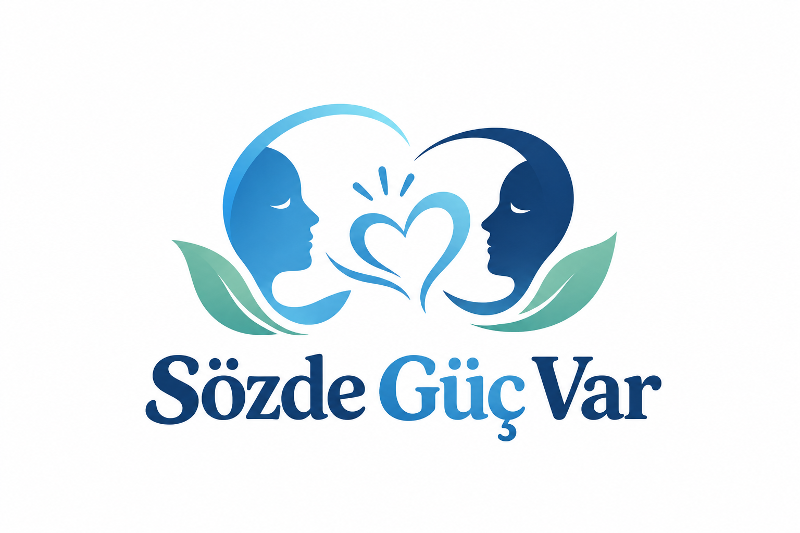

01
Konuşma akışı farklı olabilir
Bazı seslerin tekrarlanması, seslerin uzaması veya konuşma sırasında duraksamalar yaşanabilir.

Sözde Güç VarKonuşmanın tek bir doğru yolu yok. Birbirimize zaman tanıdığımızda, anlayışla dinlediğimizde ve önyargıları geride bıraktığımızda daha kapsayıcı bir dünya mümkün.
İletişim, kusursuz konuşmak değil; birbirimizi anlamaya çalışmaktır.
SÖZDE GÜÇ VARKekemelik, konuşmanın akışında kesintilerle görülebilen bir konuşma farklılığıdır. Kişiden kişiye değişebilir ve kişinin zekâsını, düşüncelerinin değerini ya da söylemek istediklerinin önemini göstermez.
Bazı seslerin tekrarlanması, seslerin uzaması veya konuşma sırasında duraksamalar yaşanabilir.
Kekemelik her kişide aynı şekilde görülmez. Herkesin anlatımına ve iletişim tercihine saygı duymak önemlidir.
Sabırlı olmak, göz teması konusunda kişinin rahatlığını gözetmek ve sözü kesmemek destekleyici bir tutumdur.
Bilgilendirme notu: Bu içerik genel farkındalık amaçlıdır; kişiye özel değerlendirme veya uzman görüşünün yerine geçmez.
Bilgi, önyargıların yerine anlayışı koymamıza yardımcı olur.
Kekemelik yalnızca heyecanla açıklanamaz. Konuşma akıcılığı farklı etkenlerle değişebilir.
Ne söylemesi gerektiğini belirtmek yerine dikkatle dinlemek ve kişiye zaman tanımak daha destekleyicidir.
Kekemelik zekânın ölçüsü değildir. Herkesin fikirleri, duyguları ve anlatacakları değerlidir.
Bazen küçük bir davranış, karşı tarafın kendini güvende ve duyulmuş hissetmesine yardımcı olabilir.
Farkındalığı paylaşCümlesini bitirmesi için ona zaman tanı.
İzin verilmedikçe onun yerine konuşma.
Konuşma biçimine değil, anlatmak istediğine odaklan.
Alay etme, taklit etme ve yargılayıcı ifadelerden kaçın.
Bir insanı dinlemek için onun kusursuz konuşmasını bekleme.
SÖZDE GÜÇ VAR • FARKINDALIK MESAJIKekemelik hakkında doğru bilgiyi paylaş. Önyargı yerine empatiyi seç. Herkesin kendini ifade edebildiği bir ortam oluşturmaya katkıda bulun.